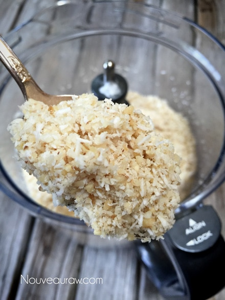
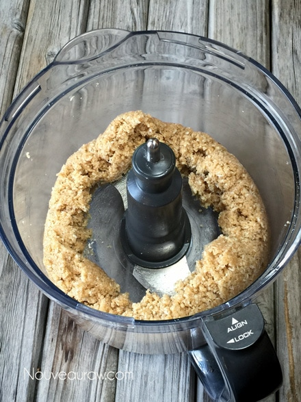

Pecan Cheesecake Squares

~ raw, gluten-free, dairy-free ~
Quite some time ago, a reader of Nouveau Raw contacted me, asking if I could convert a cooked recipe to a raw recipe. This (click here) is the recipe that inspired me. It took some time as my list of requests is quite long, but none the less, I got to it! I am like a hound dog that never gives up.
I love dissecting cooked recipes… though; trying to find ways to achieve the flavor, texture, and appearance in the raw food world isn’t always easy or even doable, but a person can come close. I thought that I would take you along on my thought process journey, so you can see how I converted this recipe.
For the shortbread layer:
So this particular recipe had three sections; the shortbread, the cheesecake, and the pecan layer. In the shortbread they originally used flour, I turned to ground nuts that had been soaked and dehydrated. They used granulated brown sugar; I used maple syrup.
Instead of butter, I chose to use walnuts and macadamia nuts to give the shortbread that buttery flavor, and I knew that the oils from the nuts would add in healthy fats. In the raw world, some ingredients can have dual purposes. They used pecans in the shortbread layer, but again I decided on the other nuts to try to get that buttery flavor profile.
For the cheesecake layer:
This part was easy. After reading through the ingredients for the cooked version, I knew that they were using a basic vanilla flavored cheesecake. I went after the same thing, except I used completely different ingredients. No dairy allowed. :) Instead of cream cheese, I used a blend of coconut meat, zucchini (yes, you read that right), a few cashews, and coconut oil. Blended with a couple of other ingredients, I was able to create an incredible “cheesecake” base. I love experimenting! I could use used my typical “cheesecake” batter, but I wanted to decrease the amounts of nuts I was using since I used nuts in the crust and on top.
For the pecan pie layer:
I used pecans just as they did, but instead of using corn syrup, butter, and eggs, I decided on apple sauce. That may sound like an odd conversion, but I didn’t want to add a lot of sugar… I mean, it’s one thing to convert from cooked to raw, but it’s another thing to hold on to my “healthy-whole-food” eating convictions… regardless of who I am making it for. To thicken it a bit, giving it that “pie” filling-like appearance, I added a tiny amount of psyllium. I also added in Allspice to provide it with that warming flavor that pecan pie has… which compliments that apple and pecan flavors.
In the end, I was quite pleased with the overall dessert. It doesn’t look exactly like the cooked version, but I was happy with my efforts. And whether or not it tasted just like the initially cooked dessert… this one tastes amazing. Sometimes it can be a challenge to match the flavor for flavor, especially when you can’t eat the one that you are trying to replicate. But it was fun, and I hope that it will be enjoyed by many. Blessings and joy, amie sue
yields 9” square pan
Shortbread layer:
Cheesecake layer:
- 2 cups ( 411 g) young Thai coconut meat
- 1/2 cup (75 g) diced, peeled mini zucchini
- 1/2 cup cashews, soaked 2+ hours
- 1/2 cup virgin coconut oil
- 1/2 cups fresh young coconut water or water
- 1/2 vanilla bean, seeds only
- 1/4 cup maple syrup
- 1/8 tsp Himalayan pink salt
Pecan Pie layer:
Preparation:
Shortbread:
- Line the base of the pan with parchment paper or plastic wrap.
- In a food processor, fitted with the “S” blade, combine the walnuts, macadamia nuts, coconut, and salt — process to a fine crumble.
- Be careful that you don’t over-process the nuts, thus releasing too much of their natural oils.
- Add the sweetener, and almond extract, processing until the batter starts to roll/ball. Again, don’t over-process.
- Press the crust into the base of the pan, firmly and evenly. Set aside.
Cheesecake layer:
- Place the cashews in a glass bowl, along with 1 cup of water.
- Soak for at least 2 hours. Read more about why (here).
- The soaking process will help reduce phytic acid, which will aid in digestion.
- The soaking also softens the cashews, so they blend nice and creamy.
- After the cashews are through soaking, drain, and rinse.
- In a high-powered blender, combine the coconut meat, zucchini, cashews, sweetener, vanilla bean seeds, and salt.
- Due to the volume and the creamy texture that we are going after, it is essential to use a high-powered blender. It could be too taxing on a lower-end model.
- Blend until the filling is creamy smooth. You shouldn’t detect any grit. If you do, keep blending.
- This process can take 2-4 minutes, depending on the strength of the blender. Keep your hand cupped around the base of the blender carafe to feel for warmth. If the batter is getting too warm, stop the machine and let it cool. Then proceed once cooled.
- You can use a different liquid sweetener if desired. Just be aware of the different flavors and colors that the sweetener might impact on the cake.
- With a vortex going in the blender, drizzle in the coconut oil. Blend just long enough to incorporate everything together. Don’t over-process.
- What is a vortex? Look into the container from the top and slowly increase the speed from low to high, the batter will form a small vortex (or hole) in the center. High-powered machines have containers that are designed to create a controlled vortex, systematically folding ingredients back to the blades for smoother blends and faster processing… instead of just spinning ingredients around, hoping they find their way to the blades.
- If your machine isn’t powerful enough or built to do this, you may need to stop the unit often to scrape the sides down.
- Pour the batter into the pan.
- Gently tap the pan on the counter to remove any air bubbles.
- Chill in the freezer for 4-6 hours and then in the fridge for 12 hours.
Pecan Pie layer:
- In a medium-sized bowl, combine the applesauce, psyllium, vanilla, Allspice, and salt. Stir together.
- Add the pecans, mixing once more.
- Pour over the cheesecake and gently spread it around, making sure to cover the entire surface.
- Return to the fridge for 1-2 hours, cut, and serve!
- Store the leftovers in the fridge for up to 5 days. Make sure that it is well sealed from fridge odors.
Below I am sharing just a few photos to show you the texture
and consistency that I was going after when creating the crust.

After adding in the wet ingredients, this is what it looked like
once it was ready for the pan.

© AmieSue.com